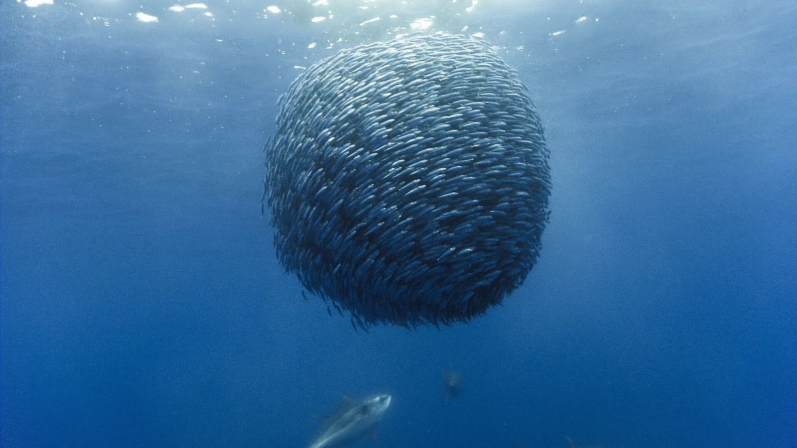

Modelos basados de Agentes
Los modelos basados en agentes (MBA) son colecciones de objetos que interactuan entre ellos y con el entorno sobre el que se
encuentran de manera dinámica, es decir, que evoluciona a través del tiempo. Estos modelos sirven para la exploración de
sistemas complejos y descentralizados donde se puede estudiar la autoorganización y emergencia de patrones.
Algunos campos que pueden estudiarse a través de los MBA son:
- Dinámica social
- Dinámica poblacional(Biología)
- Medicina: propagación de enfermedades
- Dinámica de transporte
- Economía: Mercados financieros

Modelo de Boids
El modelo de Boids fue propuesto por Craig Reynolds en 1987. En el simula el movimiento colectivo de grupos de seres vivos ("Boids")que carecen de un líder central por lo que el comportamiento de cada agentes depende de sus vecinos y el entorno en el que se desarrollan.
En este caso se considera el modelo en 2D por lo que cada boid tiene asignado un vector posición \( \mathbf{r_{i}} = (x_{i},y_{i}) \) y uno de velocidad \( \mathbf{u}_{i} = (u_{x_{i}},u_{y_{i}})\)

Recursos
En la siguiento liga se encuentran los códigos utilizados: Códigos